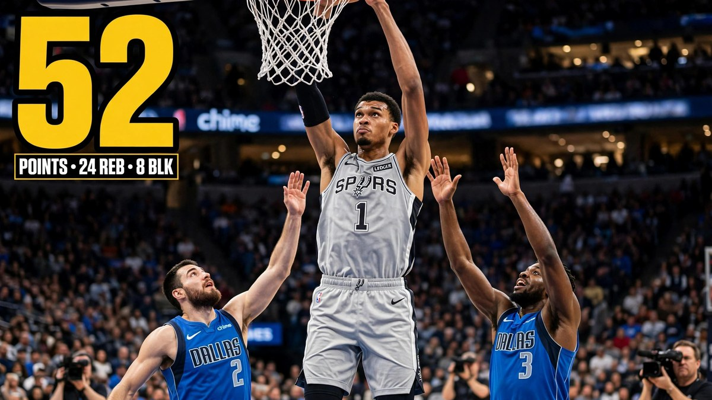

Wembanyama scores 52 as Spurs edge Mavericks 112-111
Victor Wembanyama scored a career-high 52 points and grabbed 24 rebounds with eight blocks as the San Antonio Spurs edged the Dallas Mavericks 112-111 for their sixth straight win.

Sources: ESPN, Reuters
The San Antonio Spurs beat the Dallas Mavericks 112-111 on Wednesday night, 4 November, at the Frost Bank Center in San Antonio. Victor Wembanyama scored a career-high 52 points and grabbed a career-high 24 rebounds, and he also blocked eight shots. His free throw with 24.2 seconds left gave San Antonio the win, and the victory was the Spurs' sixth in a row.
Read More
Wembanyama did most of the damage in the first half. He scored 29 points with 15 rebounds and five blocks before the break, and he made all 15 of his free throws in the half. He became the first player in the play-by-play era to record at least 25 points, 10 rebounds and five blocks in one half. He finished the night as only the second player since blocks became official in the 1973-74 season to record at least 50 points, 20 rebounds and five blocks in a game, after Bob McAdoo in 1974.
The game was close at the end. San Antonio led by 19 points early in the third quarter, but Dallas came back and took a 103-100 lead on a three-pointer by P.J. Washington with 5 minutes and 38 seconds left. Naji Marshall tied the game at 111 with a jumper with 1 minute and 41 seconds left, and Wembanyama's free throw put the Spurs back in front. Dallas called a timeout for a final shot, but Kyrie Irving missed a contested turnaround jumper with 2.5 seconds left and time ran out.
Wembanyama also had a scary moment in the second half. He rolled his right ankle with 9 minutes and 11 seconds left and left the game with San Antonio leading 94-87. He came back when Dallas had cut the lead to one point, and he scored 10 points down the stretch. Earlier, in the second quarter, he blocked three shots in 13 seconds, turning away Cooper Flagg, P.J. Washington and Daniel Gafford on the same Dallas possession.
Dylan Harper scored 21 points for San Antonio, Stephon Castle had 17 and De'Aaron Fox scored 10. Irving led Dallas with 29 points, Marshall had 22 off the bench, Washington had 21 points and 10 rebounds, and Cooper Flagg had 19 points and 10 rebounds. The Spurs moved to 6-2 with their sixth straight win, while the Mavericks lost their second game in a row. It was Wembanyama's second 50-point game, after 50 against the Washington Wizards in November 2024, and he is the fifth player in NBA history with more than one 50-point game at age 22 or younger.
What People Say
An won by 1
Kyrie throwing one brick after another during crunch time. 😭
Spurs are so bad when he’s not on the floor
They praising buddy for something he shoulda been doing!!!
All that to win by 1 againts dallas?